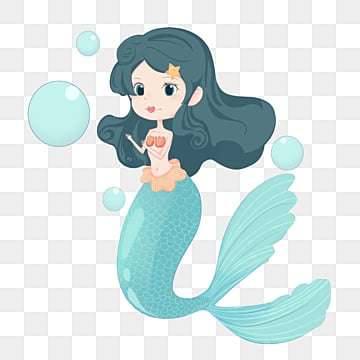

ITGIRLS
Ученый котик
В один прекраный день посчастливилось мне попасть в школу ITGIRLS.
Это команда чудесных, милых профессионалов:
- Русалка

- Золотая рыбка
- Филин
Каждый понедельник
Ученый котик рассказывает нам все основы Frontend-разработки.
Он познакомит нас с:
- HTML
- CSS
- JavaScript
- React
Ученый кот излагает материал доступно, пркрепляя видео-уроки. Почитали, посмотрели и сразу применили на практике.
Говоря о нашем прекрасном Ученом, в памяти всплывает
сказка А.С.Пушкина "У
Лукоморья дуб зеленый".
Приятного просмотра!